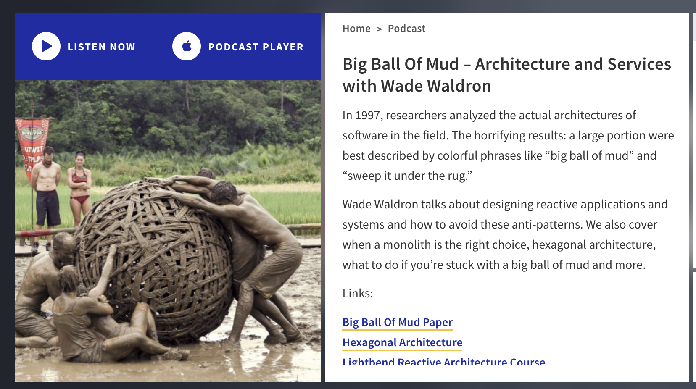
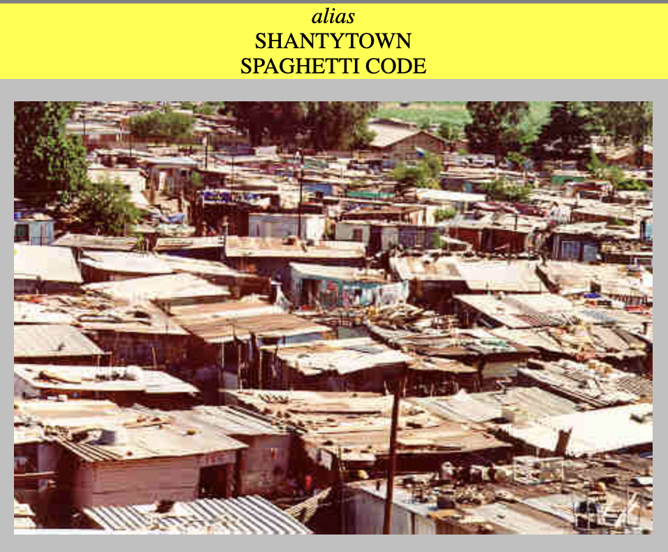

What’s issues for software development?
Big ball of mud


Code for authentication:
For application authentication, there are 3 types: by application, by SAML at first stage, and add by Oauth in later version. For authorization, there is not needed any change for different change.
- Code for frontend controller
-
lazy val secureSource = config.getOptional[Boolean]("useidam") match { case Some(true) => config.getOptional[Boolean]("pwcoauth.useoauth") match { case Some(true) => index3 case _ => index2 } case _ => index } def index2: Action[AnyContent] = { secureAction( assets.at("index.html") ) } def index3: Action[AnyContent] = { secureActionOauth( assets.at("index.html") ) } def index: Action[AnyContent] = assets.at("index.html") - Saml
-
def secureAction[A](action: Action[A]): Action[A] = Secure("SAML2Client").async(action.parser) { implicit request => ... val userInfoMap = Map("email"->profiles.head.getAttribute(emailAttrStr).toString.stripPrefix("[").stripSuffix("]")) ... userTimeOpt match { case Some(userTime) if nowTime - userTime.toInt > maxTimeout => Future( Redirect("/").flashing("success" -> "Session timeout, you need to login.") .discardingCookies(DiscardingCookie("PLAY_SESSION")).withNewSession.withHeaders("Cache-Control"-> "no-cache")) case _=> action(request).map { result => result.withSession(request.session.+("email"->userInfoMap("email")) .+("useidm"->"true") .+("userTime"->nowTime.toString) .+("privilege" -> privilege)).withHeaders("Cache-Control"-> "no-cache") } } } - Oauth
-
def secureActionOauth[A](action: Action[A]): Action[A] = Secure("PwCClient").async(action.parser) { implicit request => ... val userInfoMap = Map("email"->profiles.head.getAuthenticationAttribute("email").toString) updateUserLastActiveTime(userInfoMap.get("email")) ... userTimeOpt match { case Some(userTime) if nowTime - userTime.toInt > maxTimeout => Future( Redirect("/").flashing("success" -> "Session timeout, you need to login.") .discardingCookies(DiscardingCookie("PLAY_SESSION")).withNewSession.withHeaders("Cache-Control"-> "no-cache")) case _=> action(request).map { result => result.withSession(request.session.+("email"->userInfoMap("email")) .+("useidm"->"true") .+("userTime"->nowTime.toString) .+("privilege" -> privilege)).withHeaders("Cache-Control"-> "no-cache") .bakeCookies() } } } - Authentication
-
def createEngageuser() = deadbolt.Pattern(value = "(v_admin)|(v_lead)", patternType = PatternType.REGEX)(trim(parse.json)) {implicit authRequest => // Action.async(trim(parse.json)) { implicit authRequest => try { ... } catch { case ValidationException(msg) => Future(BadRequest(msg)) } }
0.1.0*